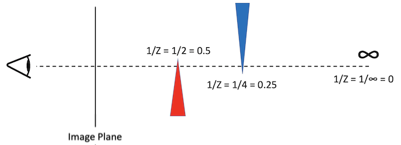

This is the workbook we’ve all be waiting for - we finally start to work in 3 dimensions !
Our fundamental objective for this workbook (in fact the rest of the unit !) is to take a 3D model (specified as a bunch of vertex positions in 3 dimensional space) and attempt to render them as a 2 dimensional image on the screen. Although it might seem like there are a lot of complex tasks in this workbook, many of them make good use of the 2D drawing functions that you have previously written. For this reason, such tasks can be quickly achieved by just calling existing functions in your code.
Rendering a 3D model onto a 2D canvas requires us to take a particular perspective/viewpoint on that 3D model. This is only to be expected - a scene will look different depending on where you view it from. To aid in our discussion, we introduce the concept of a camera. Take a look at the slides and audio narration linked to above for a discussion of this concept. If you did not attend the briefing lecture session for this workbook, you should watch the video recording of this now (link at the top of this document) since it contains important background information about this week’s tasks.
To help you in completing this workbook, you have been provided with
a ModelTriangle class (found in the libs/sdw
folder). This class represents a triangular plane in 3D space and
contains attributes that hold the positions of its three vertices, as
well as the colour of the triangle’s surface. As usual, this class
overrides the << operator so that you can direct it
to cout for debugging purposes.
Hints & Tips:
Important: Make sure you read the “Hints and Tips” at
the end of each section before attempting that task.
This might save you a lot of time and anguish !


The first implementation task in this practical is to write a low-level file reader that can parse in 3D models from numerical data files. Although the focus of this unit is NOT on grammars and parsing, understanding how models can be stored in data files provides us with valuable insight into the essential characteristics of 3D geometry and material properties. View the slides and audio narration above to find out about the OBJ file format.
Once you are happy with the concepts above, write a function that
reads in this sample
OBJ geometry file and use the data it contains to populate a vector
of ModelTriangles. At this stage, you should only focus on
reading in vertices (lines that being with a v) and
faces/facets (lines that being with an f). We will deal
with the other types of line later on in this workbook. Be careful -
remember that vertices in OBJ files are indexed from 1 (whereas vectors
are indexed from 0).
Once the sample geometry file has been loaded, loop through all of
the ModelTriangles in your populated vector and print them
out, (you should be able to direct ModelTriangles to
cout !) Open the OBJ file with a text editor and manually
check your printout against a couple of triangles - just to make sure
the data has been loaded correctly.
Add a scaling factor (float) parameter to your OBJ loading function that scales the position of all vertices at the point at which they are read in from the file. This is done in order to adjust the size of the model when it is loaded in (different models might be created to different scales !). This is to avoid the “bunnyzilla” problem illustrated in the image below - here two models have been loaded in from separate files, but the model of the rabbit was originally created with an unusually large size. Using your scaling factor it would be possible to adjust the different models to a consistent size.

Hints & Tips:
To read in the data from the geometry file, you might like to make use
of an
ifstream
and make calls to the getline function. A
split function has also been provided (see the
Utils class in the libs/sdw folder) to make
tokenising of lines easier. But it is really up to you how you choose to
parse in the files.
Just to reiterate - this unit is about graphical rendering, not grammars and parsing. As such you should keep your OBJ parser as simple as possible. It is important to remember that we will NOT be testing the robustness of your parser by throwing it challenging or malformed geometry files. Only implement the aspects of the OBJ file format that you need to complete the tasks at hand. Your parser only needs to be “good enough” to load in the sample OBJ geometry file provided above (and any other models that YOU choose to use).
When loading in the Cornell Box model, we suggest you use a scaling factor of 0.35 since this will bring the all dimensions of the vertices within the range of -1.0 to 1.0 (which seems sensible and logical).


Clearly positional information is important, but how do we know what
the model surfaces should actually look like ? When working
with OBJ files, this kind of aesthetic information is stored in a
separate “materials” file. Your next job is therefore to write a
function to read in
this sample OBJ
material file and populate a “palette” of colours. You can use the
previously encountered Colour class for this purpose (this
is where the name attribute now becomes useful).
Once you have successfully loaded in the materials file, add some
additional code to your geometry parsing function (from the previous
task) so that it accesses your colour palette when it encounters a
reference to a material (lines that begin with usemtl in
the OBJ geometry file). It makes sense to read in the materials file
before you read in the geometry file - this is so you already
have the colours stored in a data structure when you encounter
references to them in the geometry file. Note that
ModelTriangle objects have a colour attribute
that can be used to store a reference to the colour of triangles.
Hints & Tips:
You could just use a vector to store the palette of colours or, if you
want something a bit fancier, use a hashmap or hashtable for more
efficient colour lookup (using the name of the colour as a key).


Now that we have geometry and material data loaded, we can attempt to render a graphical representation of the sample model onto the SDL canvas - or as it is often called in 3D rendering: the “image plane”. This process is a little complicated, so we have split the job into two tasks - the “understanding” (this section) and the “doing” (the next section). Make sure you understand the theory first, before trying to implement the concepts. First watch just the animated video linked to above (the last of the blue buttons) for a high-level description of this process.
As you might imagine, calculating the projected position of a vertex on the image plane will involve the (x,y,z) position of the vertex in 3D space. The position of the camera and the distance between the camera and image plane will also have an effect on the position that each vertex will appear on that image plane. Everything is based around the notion of similar triangles - take a look at the slides and narrated audio for a lower-level explanation of how this works. Note that we illustrate the process in two dimensions (because it is a lot easier to show on a powerpoint slide), however the concept “scales” to three dimensions (we just need to do the same thing in x as we did in y).
When rendering our sample model, there is the additional complexity that the origin of the Cornell Box model is in the centre of the “room”, whereas the origin of the image plane is in the top left hand corner (due to the way the SDL coordinate system works). When rendering a scene onto the image plane, what we really want is for the centre of the room to appear in the centre of the image plane. To achieve this, we need to shift the calculated position of each vertex before we draw it onto the SDL window. If we shift everything to the right by half the width of the image plane and down by half the height of the image plane, the render will appear in the middle of the SDL window (as shown in the right-hand image below). If we didn’t do this, the centre of the room would appear in the top left corner of the drawing window (as shown in the left-hand image below).

In the previous task, we considered projection onto the image plane
abstractly and in theory. In this task we explore how this projection is
actually achieved and then go on to implement it in code. You should
start by adding a new function to your project called
projectVertexOntoCanvasPoint which takes in the following
three parameters:
cameraPosition: the location of the camera in 3
dimensional space (passed in as a vec3)focalLength: the distance from camera to the image
plane/canvasvertexPosition: the 3 dimensional position of a single
vertex (passed in as a vec3)Add code to this new method to calculate and return the 2D
CanvasPoint position at which the model vertex should be
projected onto the image plane. For a particular vertex, that has a
position in 3D space of (x, y, z) we can calculate its position
on the image plane (u, v) using the two formulae provided below
(where f is focal length, W and H are the
width and height of the image plane). For reference, the
W/2 and H/2 elements are the shift in origin
used to align the centre of the room with the centre of the image plane
(as shown in the diagram from the previous task).

Hints & Tips:
Note that these formulae assume the model vertices are in the camera
coordinate system (i.e. the camera is the origin and x, y and z are
distances relative to the camera position). The vertices in the OBJ
model are however all in the model coordinate system
(i.e. relative to the centre of the room). As a result of this, you will
need to do a transposition in order to convert positions from one
coordinate system to the other. You will need to get used to such
transpositions in this unit, there are numerous origins we have to cope
with !
In the interests of consistency, you should adopt the convention that positive z is “out of the screen” (towards you) and negative z is “into the screen” (away from you). Things can get really tricky if different students use different z directions !
A question that is often asked is “where should I position my camera
?”. A good starting point is to place your camera centred in the x and y
dimensions, but “stepped back” a bit in the z (by 4.0). Your initial
camera position should therefore be (0.0, 0.0, 4.0) - you
should store this position in a vec3 variable (since this
will make calculations a lot easier later on).
As for the focal length, a good distance to use is 2.0.
Assuming that you followed the above advice about camera position, this
value will position the image plane halfway between the camera and the
centre of the model. Strange things will happen if you position the
image plane behind the model, or even behind the camera !
It is important to note that focal length is a “pure” distance (i.e. it does not have a direction). You can think of the image plane as being “attached” to the camera. No matter where the camera is or what direction it is pointing, the image plane will remain centred in the camera field of view, always at the same distance from it (the focal length).
Now that we have a function that can map/project a 3D vertex onto a 2D canvas point, we are in a position where we can actually attempt to display a render of a 3D model !
We start with the simplest render possible - a “pointcloud”.
Using your projectVertexOntoCanvasPoint function,
calculate the image plane positions of each vertex of the previously
loaded Cornell Box. Due to the size of the model (vertex positions in
the range -1.0 to 1.0) the positions of the calculated points on the
image plane will all be very close to the centre of the screen. To solve
this problem, you should apply an “image plane scaling” to resize the
coordinates so that they fit nicely onto the drawing window. A
multiplier of 160 seems to be a good initial value for this scaling
factor, but feel free to experiment with this value until to get a
render that fits well onto the image plane. Make sure you scale x and y
by the same amount (in order to maintain the aspect ratio of the point
cloud).
If you draw a single white pixel at each projected image plane position, you should end up with a pointcloud render that looks like the image shown below. Although very minimalistic, with a bit of imagination you can see the room corners and boxes from the sample model.

Hints & Tips:
You might find (depending on how you write your code) that your render
is flipped upside-down. Any ideas why this might be ? Any thoughts about
how to fix this problem ?
Although we have rendered a representation of our model onto the
image plane, this render is basic (and a little hard to check for
correctness). Our next step is to draw a “wireframe” render of the
Cornell Box model onto the image plane - this makes it a lot easier to
view the structure of the model. The basic principle is to create a 2D
CanvasTriangle for each 3D ModelTriangle that
was read in from the OBJ geometry file. To achieve this, you should make
use of your projectVertexOntoCanvasPoint function in order
to convert 3D model vertices into 2D canvas positions.
In order to draw the 2D canvas triangles onto the image plane, you can make use of your 2D stroked triangle drawing function (that you wrote for the previous workbook). You see - the time spent working in 2D was useful after all ! If everything works correctly, you should end up with a wireframe render that looks something like the image below.

Hints & Tips:
You might find (depending on how you write your code) that your render
is flipped upside-down. Any ideas why this might be ? Any thoughts about
how to fix this problem ?
After you have successfully rendered a wireframe of the model, the next step is to fill those triangles ! This is going to be a lot easier than you might think !!! The image pane is 2D and you have already written a 2D “filled triangle” rasterising function in a previous workbook. Using the correct colours to fill the triangles, call this function in order to draw the Cornell Box model. The end product should look something like the image below (take a look at this week’s briefing video for some reassurance - if your render looks similar, but slightly different).


You might have noticed a problem with the above image ? Depending on the order in which the triangles appear in an OBJ file (and the order you store them in your code), rendered triangles can sometimes overlap each other inappropriately. For example, in the image shown in the previous task, the blue box is shown overlapping the red one - which is not the case in the true model. View the slides and narrated audio above to understand what causes this problem and what we can do to solve it.
In your code, create a 2D array of floats (the dimensions of the
array being the same width and height as the image plane / drawing
window). You are going to use this array to keep track of the z depth of
the model element drawn for each pixel on the screen. The data stored in
this “depth buffer” will allow us to decide what colour to paint a pixel
when there is contention. It is important that we use the
inverse of the z depth (i.e. 1/Z)
of the model element represented. This is to take into account the
effects of perspective in the rendered image (this will be explored in
more detail in a later session).
When filling the depth buffer, you need to calculate the inverse z depth of specific points on the surface of a triangle. It is worth observing that you do not actually have depth information for all these points. These depths can however be calculated by interpolating the depths of known points (i.e. the vertices). Watch the animation linked to at the top of this section for help on achieving this.
Use your depth buffer in your drawing functions to help decide what
colour to set a particular image plane pixel. In some cases the first
colour you draw a pixel will be the correct one, in other cases this
colour will need to be overwritten by a subsequent colour. If your depth
buffer is operating correctly, you should see something like the
left-hand image shown below. The two right-hand images show the
difference between interpolating Z and interpolating
1/Z.

Hints & Tips:
Note that the CanvasPoint class has a depth
attribute that you might like to use to help you keep track of the
inverse z depth of each vertex of a CanvasTriangle.
When you create the depth buffer array you should first initialise
every element to zero. This signifies that at the start (before
rendering the scene takes place) that there is no model element
represented in any pixel position. Another way to think of this is that
this value represents 1/Z where Z is infinity, so that any
model element that is subsequently encountered is sure to be closer.
Because we are using the inverse of the z depth, we must remember
that the colour a particular pixel should be drawn must be the model
element with the largest 1/Z. Consider the diagram
below for example - the pixel on the image plane through which the
dotted line passes should clearly be drawn red (since the red triangle
is the closest to the camera/eye). However 1/Z for the red
triangle (0.5) is greater than that of the blue triangle
(0.25). The largest 1/Z always wins !
